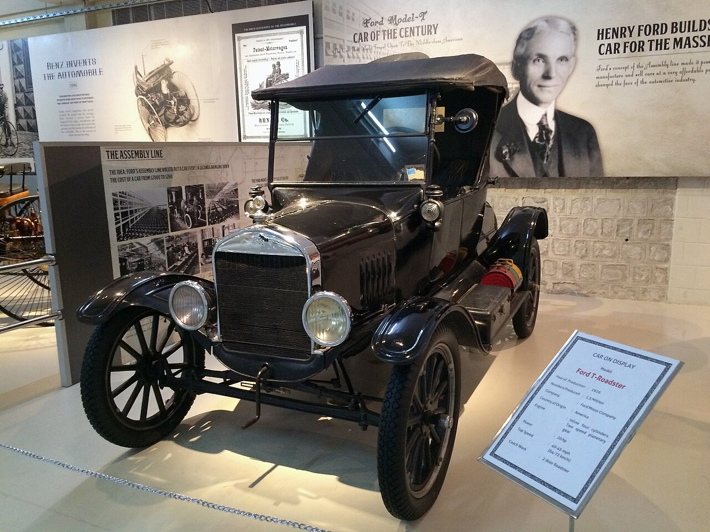

Who is Henry Ford?
Henry Ford (July 30, 1863 – April 7, 1947) was an American industrialist and business magnate. As the founder of the Ford Motor Company, he is credited as a pioneer in making automobiles affordable for middle-class Americans through the system that came to be known as Fordism. In 1911 he was awarded a patent for the transmission mechanism that would be used in the Ford Model T and other automobiles.
Early Life
Ford was born in a farmhouse in Springwells Township, Michigan, and left home at the age of 16 to find work in Detroit. It was a few years before this time that Ford first experienced automobiles, and throughout the later half of the 1880s, he began repairing and later constructing engines, and through the 1890s worked with a division of Edison Electric. He founded the Ford Motor Company in 1903 after prior failures in business, but success in constructing automobiles.
Career
The introduction of the Ford Model T automobile in 1908 is credited with having revolutionized both transportation and American industry.  As the sole owner of the Ford Motor Company, Ford became one of the wealthiest persons in the world. He was also among the pioneers of the five-day work-week. Ford believed that consumerism could help to bring about world peace. His commitment to systematically lowering costs resulted in many technical and business innovations, including a franchise system, which allowed for car dealerships throughout North America and in major cities on six continents.
Personal Life and Death
Ford was known for his pacifism during the first years of World War I, although during the war his company became a major supplier of weapons. He promoted the League of Nations. In the 1920s Ford promoted antisemitism through his newspaper The Dearborn Independent and the book The International Jew. He opposed his country's entry into World War II, and served for a time on board of the America First Committee. After his son Edsel died in 1943 Ford resumed control of the company, but was too frail to make decisions and quickly came under the control of several of his subordinates. He turned over the company to his grandson Henry Ford II in 1945. Upon his death in 1947 he left most of his wealth to the Ford Foundation, and control of the company to his family.